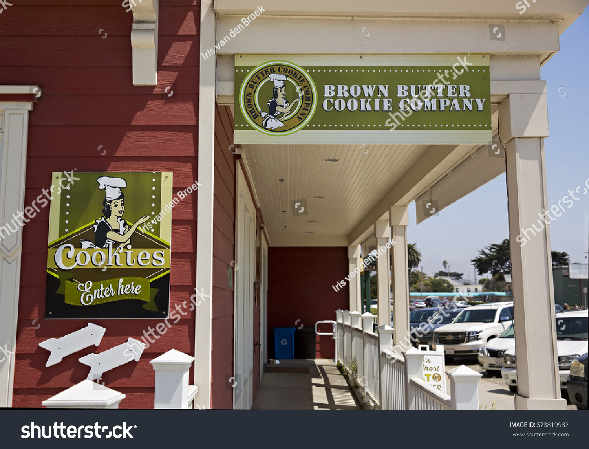

I have completed the Google Data Analytics Professional Certificate offered on Coursera. The course teaches the six stages of the data analysis process (ask, prepare, process, analyze, share & act) and how to use tools like SQL, R, Tableau to solve business problems given a set of data.
Each student is expected to create their own capstone project to prove their understanding of the data analysis process and how it is used in solving business problems in a real world setting.
This can be added to a students portfolio. For this purpose, i present my Capstone Project on the Cyclistic Bikeshare Case Study.

I was given the chance to analyze customer data for an insurance company, providing them with valuable insights. By identifying the age brackets, lead sources and industries that
generated the most sales; these insights enabled the company to focus their efforts on targeting these areas for increased sales.

This hosts all my data visualization dashboards i created using tableau.

I conducted an analysis of a cookie company's financial performance using Microsoft Excel. The data was collected over a period of 2 years and contained information on the company's revenue, cost, and profit.
The aim of this analysis was to identify the key drivers of the company's financial performance and provide insights on how to improve profitability.
I used excel for data cleaning, data manipulation, and visualization to explore the data and uncover meaningful insights.

In this project, i conducted an analysis of bike sales data using Microsoft Excel. The aim of this analysis was to gain insights into the sales trend and patterns to identify opportunities that can improve sales.
Using Excel, i conducted a series of analyses including data cleaning, data manipulation, and visualization to explore the data and uncover meaningful insights.

I used SQL to clean a dataset for analysis and visualization

A complete project using Python for the Data cleaning and analysis.